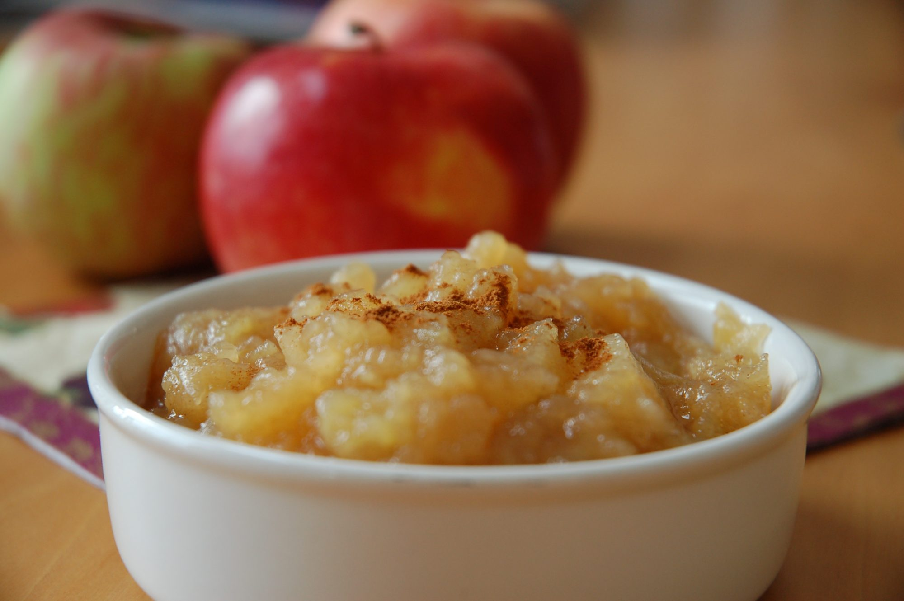

Sarah's Applesauce

Description
This applesauce is delicious! I make it for my younger brother all the time and he loves it - and he hates canned applesauce!
Ingredients
- 4 apples - peeled, cored and chopped
- 3/4 cup water
- 1/4 cup white sugar
- 1/2 teaspoon ground cinnamon
Steps
- In a saucepan, combine apples, water, sugar, and cinnamon.
- Cover, and cook over medium hear for 15 to 20 minutes, or until apples are soft.
- Allow to cool, then mash with a fork or potato masher.